Home » The dimension » Refuges
Refuges
Not everything in The Remembering wants you lost. Some rooms are places to breathe.
Refuges#
Refuges are safe rooms: fifteen by fifteen blocks, yellow-carpeted, lit, furnished, with chests. Inside one your insanity falls instead of rising. There are five kinds: the lounge, the kitchen, the workshop, the garden and the storage room.
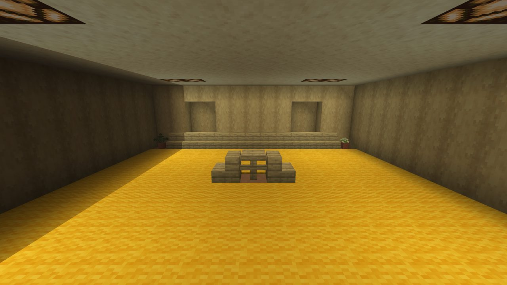
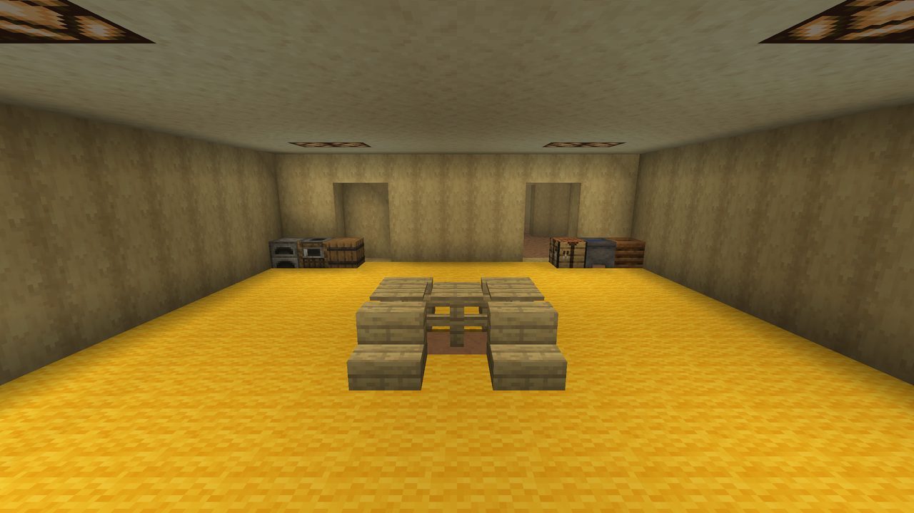
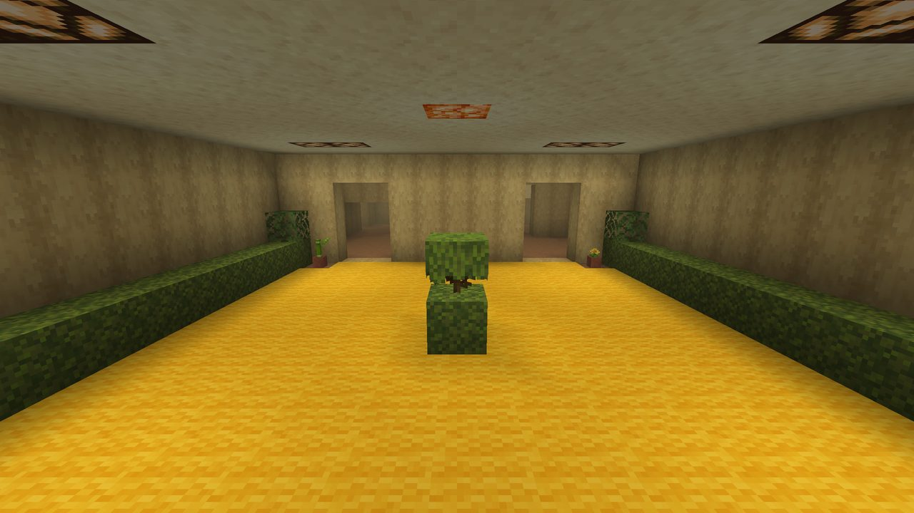
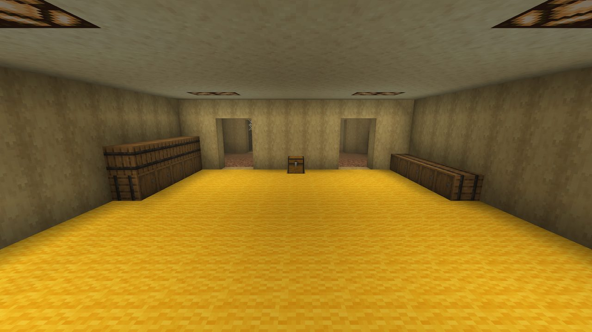
- Every floor from the top of the overworld floors down through the End floors has at least one guaranteed refuge in every 256 by 256 region.
- More refuges turn up in groups on the overworld, Nether and End floors, stacked three floors apart.
- The geometric level has its own deep refuges, in clearings in the math.
- Refuge jukeboxes play vanilla discs now and then (13, cat, far, mall, mellohi or chirp), resting four to eight minutes between discs.
/backrooms locate refugefinds the nearest one.
So refuges are common: half the time the nearest one on your floor is within about 80 blocks in a straight line.
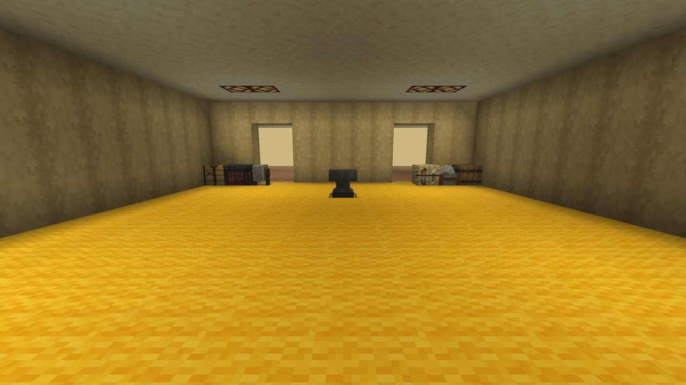
Calm spots
Insanity is calm in refuges, in remembered rooms and misremembered places, in the geometric level's deep refuges and landmarks, and within a few blocks of an open Gateway.
Remembered rooms#
Remembered rooms turn up on many floors. Each remembers one part of the game, with one detail wrong:
| Floors | Rooms |
|---|---|
| Overworld floors | The first night, the farm, the mine, the village square, the enchanting room, the seabed |
| Nether floors | The Nether portal, the fortress crossing |
| End floors | The End portal room, the dragon's perch |
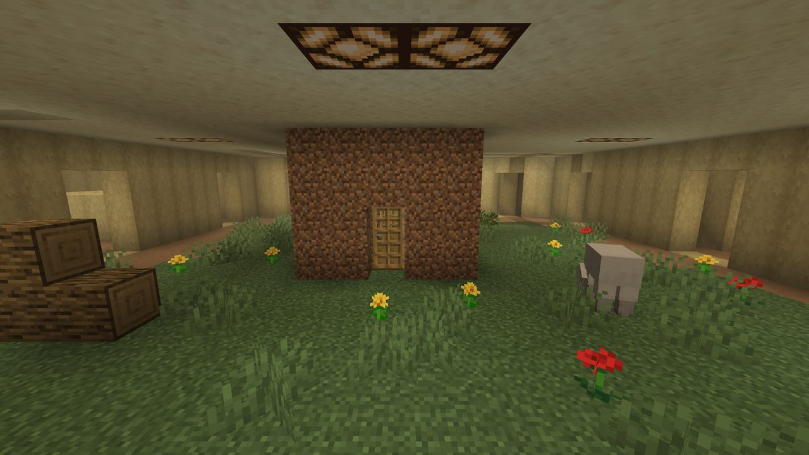
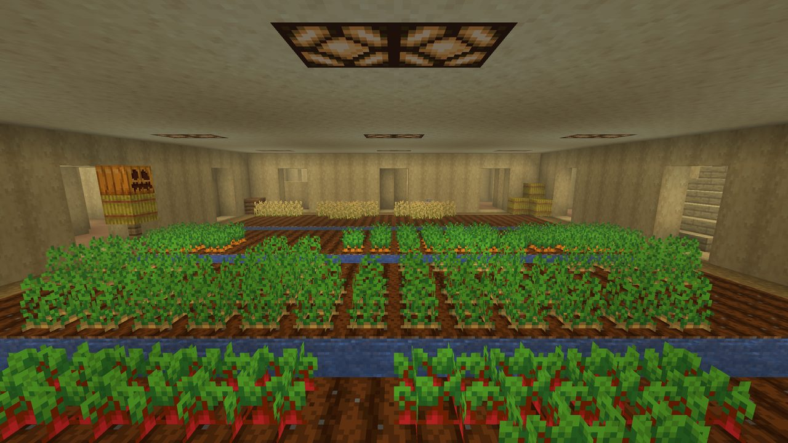
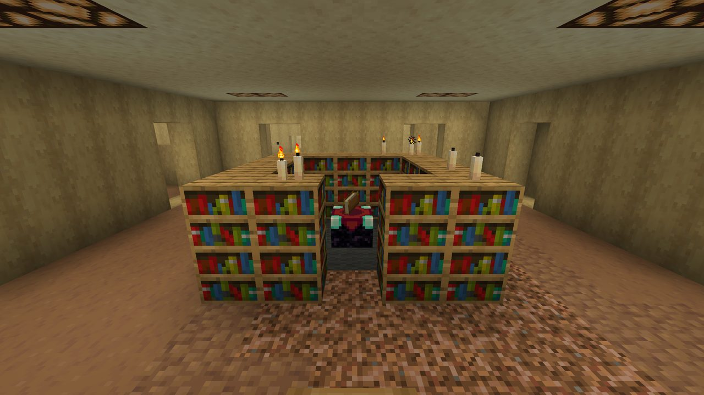
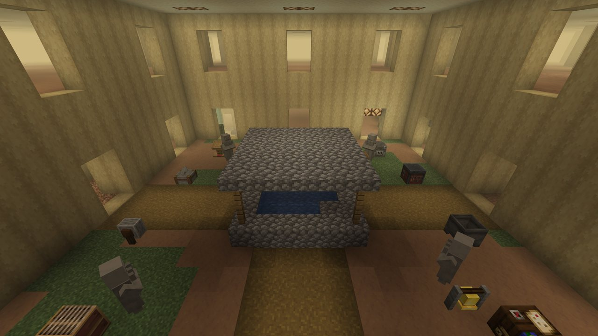
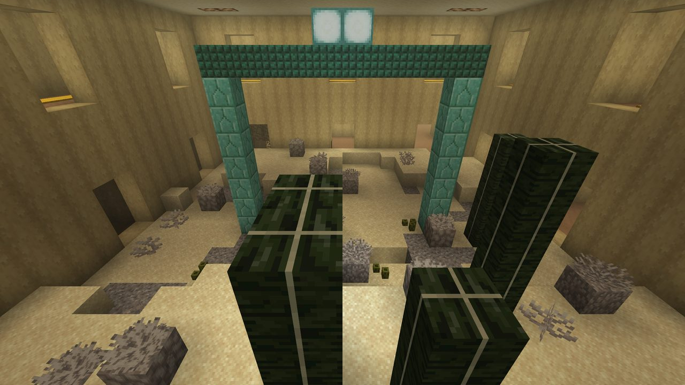
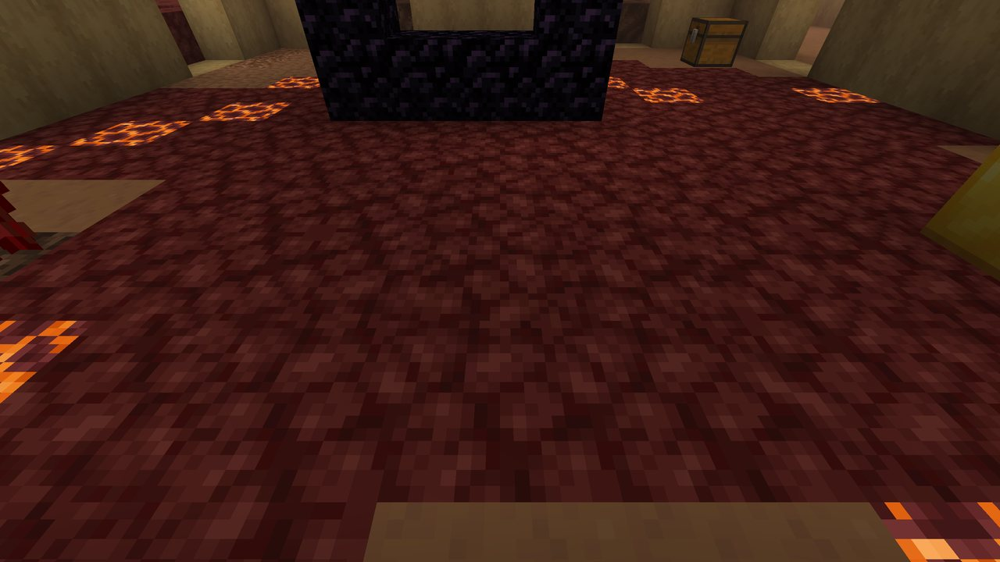
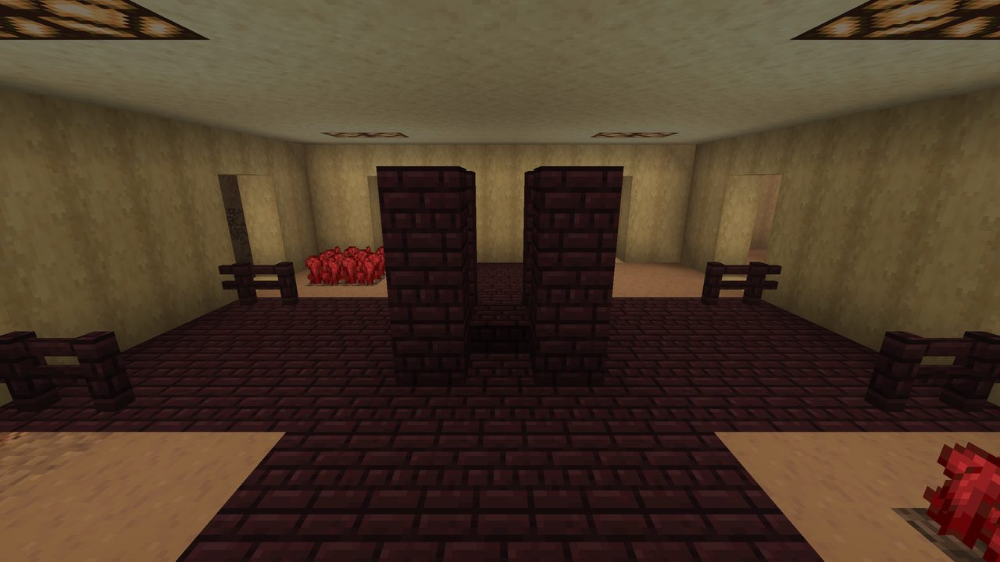
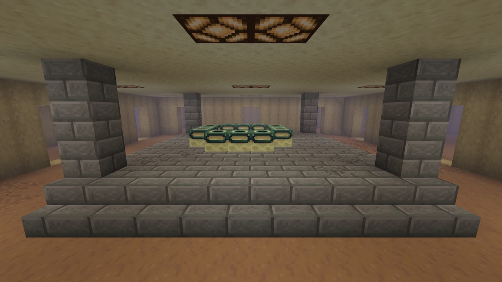
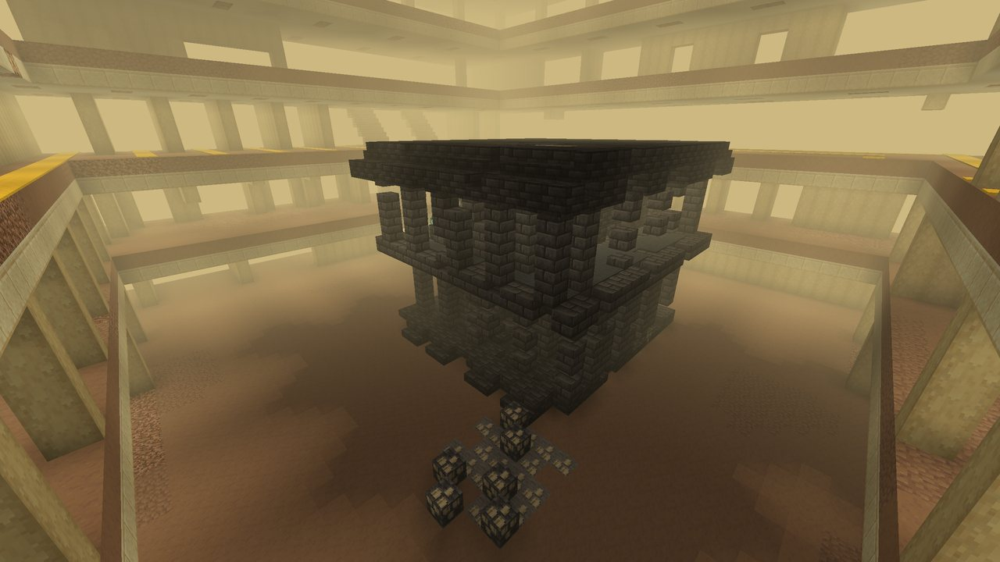
Misremembered places#
Misremembered places are chambers that hold a whole vanilla structure, loaded from the game itself and remembered wrong: blocks swapped for slabs, parts twisted, pieces missing, some Memarium, all water and lava drained. Large ones hold bigger structures; the Nether and End floors have their own.
- The vanilla blocks inside are not copies: they break and drop like normal blocks.
- The first chest you open in one sometimes makes a quiet mob sound.
/backrooms locatepoifinds the nearest misremembered place or remembered room.
What is in the chests#
Room chests and barrels in The Remembering hold food, light, paper and string, iron and copper ingots, ladders and the odd iron tool. Rarer finds:
- An enchanted book with one of the four Remembering enchantments: Keeping, Stillness, Slow Fall or Curse of Fading. Apart from the odd enchanted book in a Buried Works archive, they are found nowhere else.
- A Potion of Sanity, or a Splash Potion of Insanity.
- Raw Memarium, a disc fragment.
- A Remembered Upgrade template: 9% per chest in remembered rooms and in the refuges that come in groups.
- Iron, a block of iron, copper, redstone, levers and redstone torches, and crafting tables: everything you need to build a door out.
Loot barrels always stand against a wall, corners first, lid facing into the room: never out in the open, in a doorway, in a one-wide hall or next to a stair.
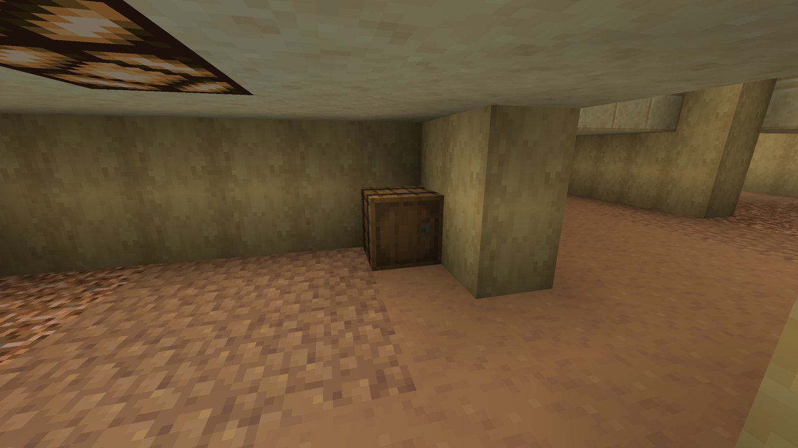
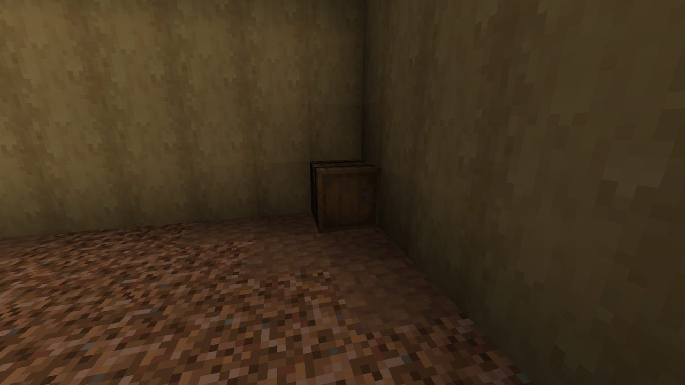